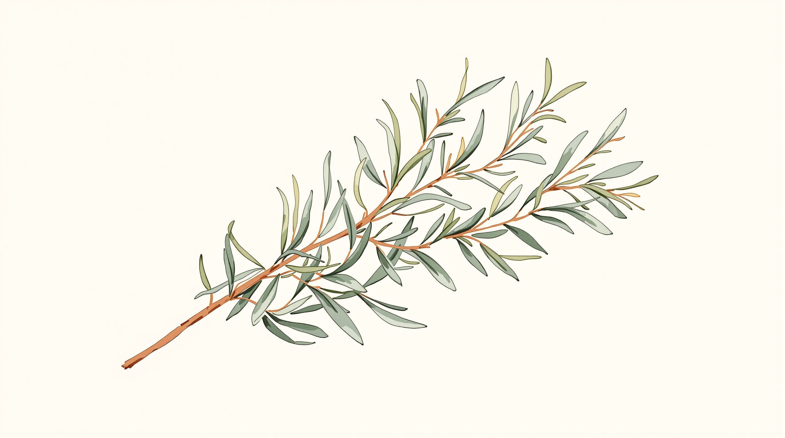
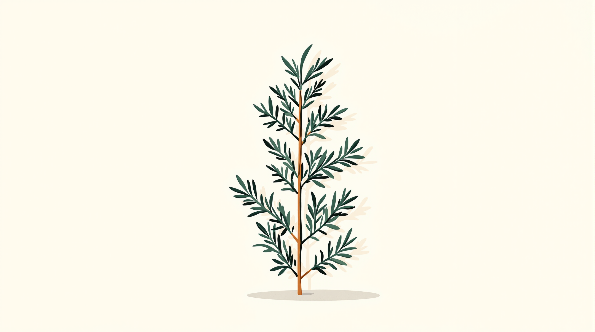
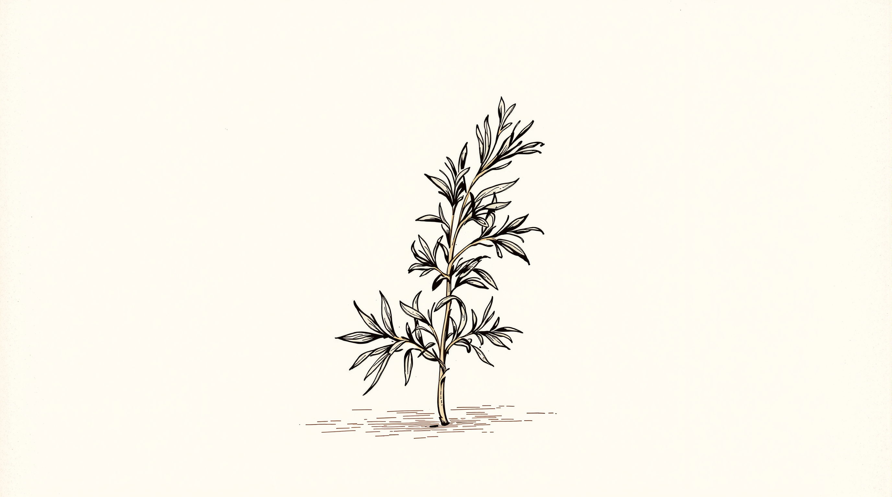
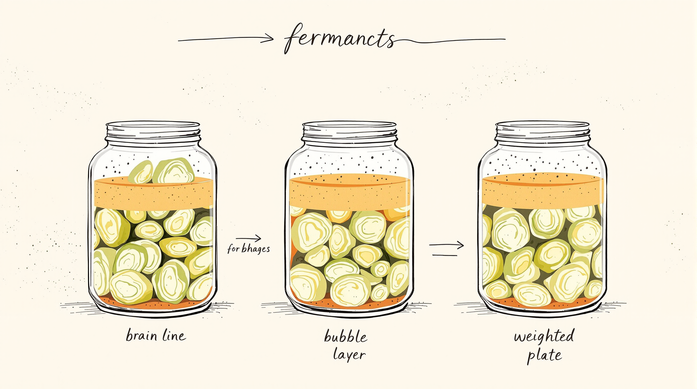
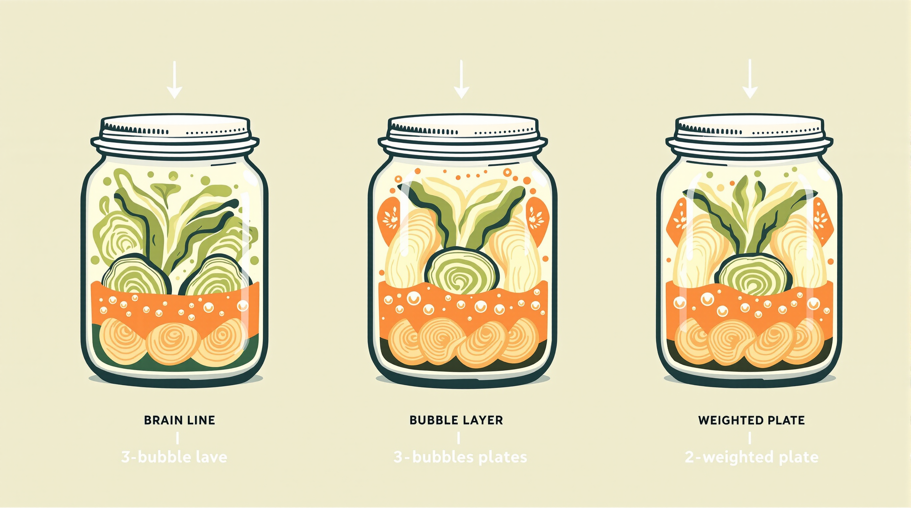
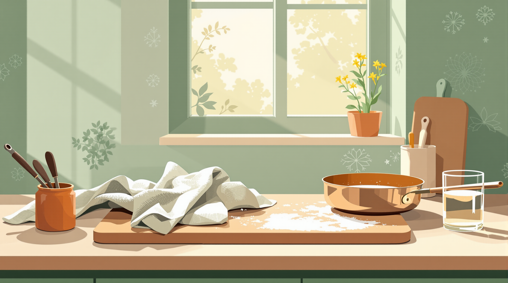

01 — Sourdough loaf
Round country loaf, scored top, on a wire rack with a linen tea towel, soft window light.
Texture


02 — Folding dough
Hands folding dough on a wooden board, flour dusted, action mid-motion.
Action / hands


03 — Preserving supplies
Kilner jar, brass scale, funnel, muslin, wooden spoon, saucer. Overhead three-quarter angle.
Still life / multiple objects


04 — Rosemary sprig
A single sprig of rosemary on cream, slight shadow. Vintage gardening book plate.
Botanical / linework




05 — Fermentation diagram
Cross-section of three jars of sauerkraut at three stages, labelled.
Labelling / diagram




06 — Morning kitchen
Kitchen counter at morning light. Board, copper pan, parchment with flour, glass of water.
Mood / scene


